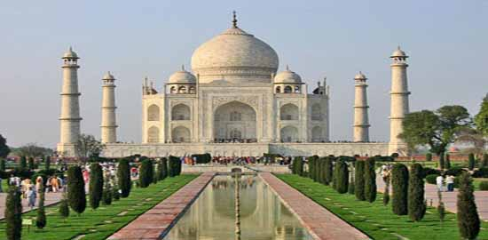
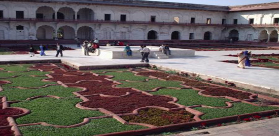
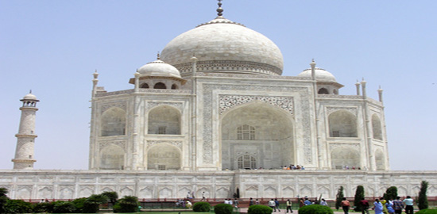
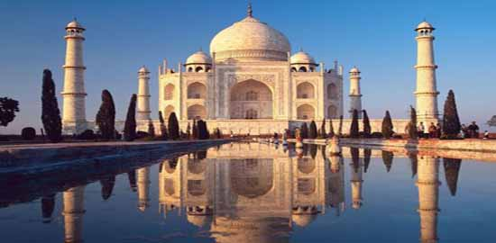
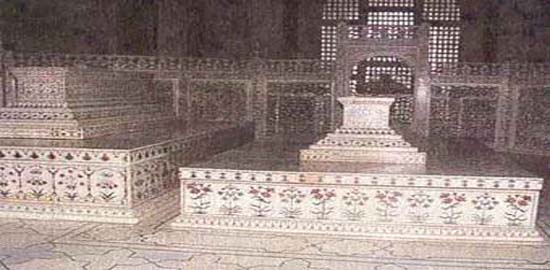
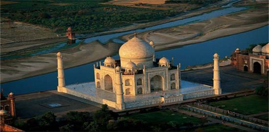
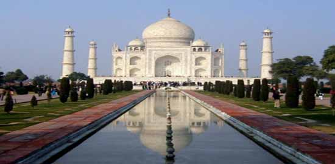

|







Тадж Махал е мавзолей в Агра, Индия, построен от императора Шах Джахан за любимата му жена Мумтаз Махал. Като млад принц Кхуррам, третият син на император Джахангир, се жени за красавата принцеса Арджуманд Бано Бегум, с която имат 14 деца. През 1628 г. Кхуррам заема императорския престол под името Шах Джахан (господар на света), а съпругата му е наречена Мумтаз Махал (възвишената в двореца). Мумтаз Махал придружава съпруга си при всички негови военни походи. Тя умира по време на военна кампания през 1631 г. при раждане на 39-годишна възраст Императорът решава да увековечи Мумтаз Махал с построяването на неповторима мраморна гробница.
След приключване на двегодишен траур, строителството на мавзолея започва през 1633 г. За място на строежа е избрана голяма градина на брега на реката, собственост на раджа Джай Сингх; мястото е избрано тъй като добре се вижда от дворците в Червената крепост. 20 хиляди души работят тук в продължение на 17 години, архитекти и майстори са събрани от цяла Индия, както и от Иран и Турция. При строителството са използвани йеменски ахати, арабски корали, персийски оникс и аметисти. Една легенда гласи, че след завършване на строителсвото на Тадж Махал майсторите бивали ослепявани или убивани, за да не могат никога и никъде отново да създадат подобна красота.
Разноските по строителството на екстравагантния мавзолей са тежко бреме за държавата и водят до сериозна финансова криза. Когато през 1658 г. се разнася вест за сериозно заболяване на Шах Джахан, четирима от синовете му незабавно си оспорват трона. Победителят Аурангзеб намира баща си оздравял, но узурпира властта и последните 8 години от живота си Шах Джахан прекарва затворен в Червената крепост, съзерцавайки Тадж Махал. Аурангзеб погребва баща си в мавзолея, въпреки че Шах Джахан е предвиждал да построи за себе си отделна голяма гробница.
В началото на XIX-ти век британският генерал-губернатор планира да разруши Тадж Махал и да го продаде на парчета, като монументът е спасен единствено поради липсата на потенциални купувачи в Англия.
Комплексът Тадж Махал е дълъг 580 метра и широк 300, като в ограденото с висока стена пространство освен мавзолеят и джамията са разположени конюшни и ханове за видни гости.
Самият мавзолей е с квадратна основа, заоблен по ъглите, всяка от страните е дълга 56.6 метра, с голяма централна арка по средата и по-малки арки от двете и? страни. На всеки ъгъл е разположен малък купол, а централният купол, висок 70 метра, наподобява огромна перла - Мохамед описва трона на Аллах като бяла перла, поставена върху четири колони. Фасадата на мавзолея е покрита с резба и инкрустации от цветни камъни, като стиховете от Корана са съчетани с флорални мотиви.
Портата на комплекса, завършена през 1684 г., е висока 30 метра, като целта е гробницата да не се вижда преди да се мине през портата. Оригиналната врата на портата, отмъкната от индуски войски през XVIII-и век, е била от масивно сребро, като по нея са били наковани 1100 пирона с главички от сребърни монети. Покриващите портата калиграфски надписи изглеждат еднакви по размер, като за целта буквите постепенно са увеличавани отдолу нагоре.
От двете страни на мавзолея са разположени две еднакви сгради от червен пясъчник. Западната е действаща джамия, а източната, известна като Длсауаб (отговор) не гледа към Мека и не може да се използва за молитви.
Гробницата е разположена върху платформа, висока 6.7 и 95 метра в квадрат, като единственото двойно стълбище води към мавзолея.
По страните на платформата се издигат 4 минарета, високи 41.6 метра, които са леко наклонени навън: при земетресение минаретата е трябвало да паднат встрани, а не върху гробницата. На всяка кула е изписана по една буква - Р,Х,М,Н - като заедно те се четат ар-рахман (всемилостивия), едно от 99-те имена на Аллах.
Вътрешността на мавзолея се състои от централна зала с великолепна акустика и четири осмоъгълни зали отстрани - те са били предвидени от Шах Джахан за гробници на членове на императорското семейство, но Аурангзеб пренебрегва волята на баща си. Под залата е разположена крипта (макбара), в която се намират гробовете на Мумтаз Махал и Шах Джахан. В централната зала са разположени копия на гробовете, тъй като е било обичайно да се прави частен и публичен гроб. Гробовете в залата, украсени с полускъпоценни камъни, първоначално са били обградени със сребърен параван, но Аурангзеб го заменя с великолепен мраморен параван. Някои от мозаечните цветчета, украсяващи паравана, са съставени от над 60 детайла и създават илюзия за обемност. Над гробовете гори лампа, чийто огън никога не трябвало да загасва (съвременната лампа е дарена от генерал-губернатора на Индия лорд Кързън, тъй като оригиналната е била открадната).
Градината (Чар багх) на комплекса, дълга и широка по 300 метра, символизира мюсюлманския рай, в който според Корана текат четири реки - от вода, мляко, вино и чист мед. Днешната градина е бледно подобие на оригиналната, която е била разделена от водни канали на 4 части с по 16 цветни лехи във всяка част, с 400 различни растения във всяка леха. Дърветата са били кипариси (символ на смъртта) и плодови дръвчета (символ на живота). В каналите, разделящи градината, са плували пъстри риби, а сред дърветата са били пуснати най-различни птици.
|